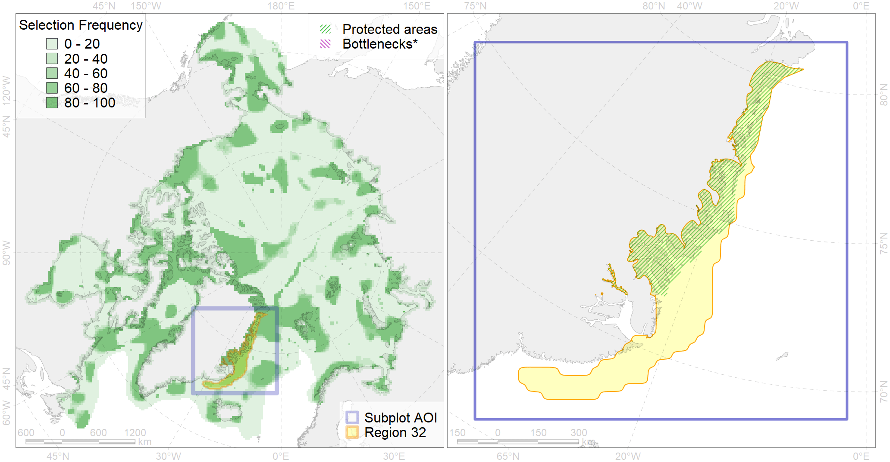

Region 32
Region 32
“ArcNet” scenario 33 achievement for region 32.
Use Accenter for advanced mode.

0
CFs inside of Region completely
19
CFs inside of Region at quarter
25
Complete-targets achievement by Region
37
Half-targets achievement by Region
| CF | Name | Target Achievement for Region | Proportion of Target Achievement in Region | Amount Proportion in Region |
|---|---|---|---|---|
| 1012 | Atlantic Walrus haulouts in East Greenland | 99.2% | 95.2% | 95.2% |
| 2025 | Harp seal whelping areas in the West Ice region | 164.2% | 95.4% | 90.4% |
| 5073 | Narwhal East Greenland stock winter core distribution | 95.4% | 94.2% | 86.8% |
| 3122 | polynya Greenland E | 630.1% | 78.4% | 77.9% |
| 1020 | Atlantic Walrus Winter Distribution in East Greenland | 93.3% | 92.5% | 69.0% |
| 7218 | East Greenland kelp patches (10-12) | 222.2% | 85.1% | 66.7% |
| 3007 | Fast Ice distribution in the East Greenland region | 980.8% | 69.6% | 59.7% |
| 5072 | Narwhal East Greenland stock summer distribution | 116.5% | 74.0% | 57.4% |
| 9024 | polar bear denning areas of EG (East Greenland) subpopulation | 85.2% | 79.1% | 55.8% |
| 6018 | Long-tailed duck (Clangula hyemalis) Greenland moulting&migration stopovers | 61.5% | 61.2% | 48.7% |
| 7158 | III.5.1.2. NE Greenland glacial troughs | 459.0% | 61.8% | 42.4% |
| 7156 | III.5.1. Northeast Greenland shelf and slope | 397.9% | 51.8% | 41.4% |
| 1004 | Atlantic Walrus Summer Distribution in East Greenland | 116.3% | 57.0% | 41.4% |
| 9006 | polar bear of the EG (East Greenland) subpopulation distribution | 100.4% | 48.5% | 35.0% |
| 2031 | Hooded seal wheling areas in the West Ice region | 80.9% | 79.6% | 34.7% |
| 2047 | Ringed seal whelping areas in Greenland region | 258.3% | 50.5% | 33.8% |
| 7033 | Northern and Eastern Greenland region | 260.2% | 46.2% | 32.4% |
| 3054 | Multiyear Ice distribution in September in the Greenland Sea LME | 158.0% | 30.4% | 28.9% |
| 7161 | III.6.1.1. SE Greenland medium and low profile shelf | 172.3% | 47.1% | 25.5% |
| 7157 | III.5.1.1. NE Greenland medium and low profile shelf | 386.3% | 36.2% | 25.0% |
| 2028 | Hooded seal molting areas | 50.5% | 48.7% | 21.3% |
| 2059 | Harp seal foraging areas in Greenland as predicted by MIZ distribution | 167.0% | 22.7% | 20.7% |
| 3036 | Marginal Ice Zone distribution in July in the Greenland Sea LME | 78.9% | 30.3% | 20.0% |
| 6036 | Ivory gull (Pagophila eburnea) East Greenland breeding colonies | 29.9% | 25.5% | 19.4% |
| 5045 | Bowhead whale of the Spitsbergen population core distribution | 21.9% | 21.9% | 16.8% |
| 6095 | 6095 PagophileburneEGreenland breeding colonies | 35.4% | 34.6% | 16.4% |
| 7160 | III.6.1. Southeast Greenland shelf | 122.2% | 30.1% | 15.9% |
| 7163 | III.6.2. Southwest Greenland slope | 91.8% | 39.7% | 15.3% |
| 4064 | Range of the Smooth polar sculpin (Cottunculus subspinosus) (F 52) | 223.6% | 46.6% | 14.9% |
| 6091 | 6091 Little auk breeding colonies of A. alle alle Greenland Canada | 28.9% | 20.6% | 14.2% |
| 7162 | III.6.1.2. SE Greenland glacial troughs | 98.3% | 28.6% | 13.7% |
| 6031 | Little auk (Alle alle alle) breeding colonies in Greenland and Canada | 15.7% | 15.2% | 11.8% |
| 6029 | Glaucous gull (Larus hyperboreus euceretes) breeding grounds | 95.5% | 21.9% | 11.6% |
| 3025 | Marginal Ice Zone distribution in April in the Greenland Sea LME | 24.5% | 23.4% | 11.5% |
| 8040 | Greenland glacial termini | 36.1% | 28.6% | 10.8% |
| 7014 | Core of Canadian - Greenland Province of Arcto-Atlantic zoogeographical region | 137.9% | 19.1% | 10.4% |
| 7159 | III.5.2. NE Greenland slope | 85.7% | 21.8% | 9.9% |
| 6076 | Common murre (Uria aalge aalge) wintering grounds | 41.7% | 22.3% | 8.3% |
| 6090 | 6090 Fratercularcticnaumanni breeding colonies | 16.4% | 10.4% | 8.2% |
| 6009 | Brent goose (Branta bernicla hrota) Greenland, Svalbard and FJL breeding&moulting grounds | 44.6% | 8.3% | 8.0% |
| 4074 | Fish zoogeography, Arctic Region, High-Arctic Shelf Province, Canadian-Greenland District (10A) | 103.6% | 15.3% | 7.9% |
| 4056 | Distribution of the American Plaice (Hippoglossoides platessoides) (F 47), European populations | 231.1% | 14.7% | 7.7% |
| 4055 | Range of the Shorthorn Sculpin (Myoxocephalus scorpius) (F 46), American populations | 210.3% | 11.9% | 6.8% |
| 4032 | Range of the Arctic skate (Amblyraja hyperborea) (F2) | 195.5% | 15.0% | 6.4% |
| 7184 | VI.1. Greenland Sea and Fram Strait Basin rises VI.1.1. Plateaus | 40.1% | 15.5% | 6.2% |
| 6002 | Little Auk (Alle alle alle) winetring grounds | 18.6% | 12.9% | 5.2% |
| 6004 | Little Auk (Alle alle polaris) wintering grounds | 24.8% | 13.8% | 4.7% |
| 4053 | Range of the Fourhorn Sculpin (Myoxocephalus quadricornis) (F 45), Euro-Asian populations | 150.3% | 9.0% | 4.6% |
| 6052 | Common eider (Somateria mollissima borealis) East Greenland breeding&moulting grounds | 4.6% | 4.6% | 3.8% |
| 5112 | Arctic Cetaceans (beluga, bowhead, narwhal) winter habitats as predicterd by MIZ | 8.0% | 6.6% | 3.8% |
| 4059 | Range of the Greenland Halibut (Reinhardtius hippoglossoides) (F 49) | 106.6% | 9.0% | 3.5% |
| 4017 | Feeding/ migration area of the Greenland Shark (Somniosus microcephalus) (F1) | 14.9% | 8.7% | 3.5% |
| 4046 | Range of the Thorny Skate (Amblyraja radiata) (F 3) | 44.3% | 8.3% | 3.5% |
| 4003 | Range of the Atlantic Capelin (Mallotus villosus) (F10) | 105.4% | 8.9% | 3.5% |
| 7025 | Eurasian bathyal region | 28.0% | 7.5% | 3.4% |
| 4037 | Distribution of the Glacial cod (Arctogadus glacialis) (F34) | 32.6% | 7.9% | 3.2% |
| 5046 | Bowhead whale of the Spitsbergen population home range | 14.8% | 14.7% | 3.1% |
| 6083 | Thick-billed murre (Uria lomvia lomvia) wintering grounds | 11.1% | 7.8% | 3.0% |
| 2061 | Ringed seal circumpolar foraging areas as predicted by MIZ distribution | 11.5% | 6.0% | 2.8% |
| 4045 | Feeding/migration area of the Pink Salmon (Oncorhynchus gorbuscha), native distribution (F23) | 41.7% | 6.8% | 2.8% |
| 6015 | Black guillemot (Cepphus grylle mandti) breeding grounds | 19.6% | 4.2% | 2.4% |
| 6023 | Atlantic puffin (Fratercula arctica naumanni) wintering grounds | 8.1% | 6.6% | 2.4% |
| 7262 | 7262 I I I 5 1 3 | 3.4% | 2.4% | 2.4% |
| 6040 | Ivory gull (Pagophila eburnea) postbreeding grounds in the Barents and the Kara Sea | 7.2% | 3.4% | 2.2% |
| 5059 | Humpback whale summer feeding areas in the Eastern Greenland and Iceland | 14.1% | 4.7% | 2.1% |
| 4085 | Fish zoogeography, Arctic Region, Subarctic Transitional-Atlantic Province, Labrador – S Greenland District | 15.0% | 3.2% | 1.8% |
| 4029 | Feeding area of the Arctic charr (Salvelinus alpinus), anadromous populations (F28) | 4.1% | 3.6% | 1.7% |
| 4096 | Range of the Glacial eelpout (Lycodes frigidus) | 23.7% | 6.1% | 1.5% |
| 4041 | Range of the Polar Cod (Boreogadus saida) (F35) | 9.8% | 3.7% | 1.3% |
| 4049 | Range of the Haddock (Melanogrammus aeglefinus) (F 42) | 14.3% | 2.3% | 1.2% |
| 6022 | Atlantic puffin (Fratercula arctica naumanni) breeding colonies | 1.6% | 1.2% | 1.2% |
| 6049 | Black-legged kittiwake (Rissa tridactyla tridactyla) wintering grounds | 2.1% | 2.1% | 1.0% |
| 5048 | Fin whale summer feeding areas in the East Greenland and West Iceland | 2.2% | 2.2% | 0.8% |
| 5037 | Blue whale summer feeding areas in the Northeast Atlantic | 1.2% | 0.9% | 0.5% |
| 4079 | Fish zoogeography, Arctic Region, Arctic Abyssal Province (11A -Scandian, 11B - Central-Arctic and 11C - Baffin Deep-sea Districts ) | 7.8% | 1.3% | 0.4% |
| 7064 | I.1.1.1. Coastal domain in the Barents Sea | 0.0% | 0.0% | 0.0% |